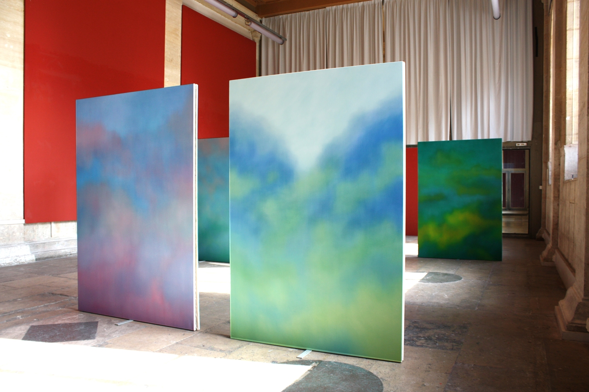
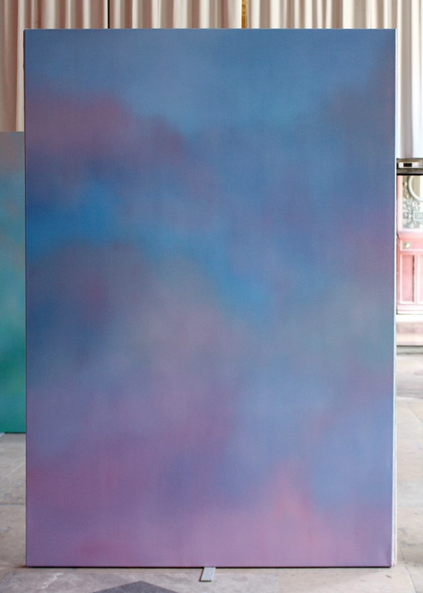
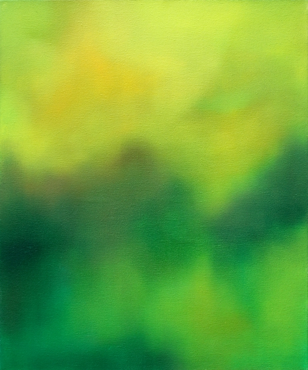
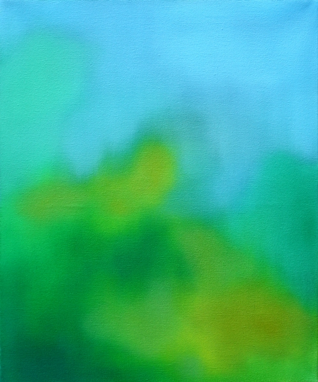
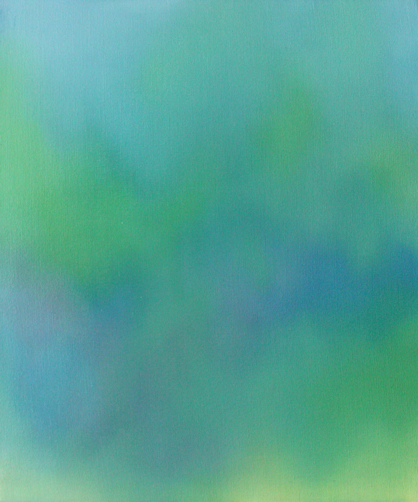
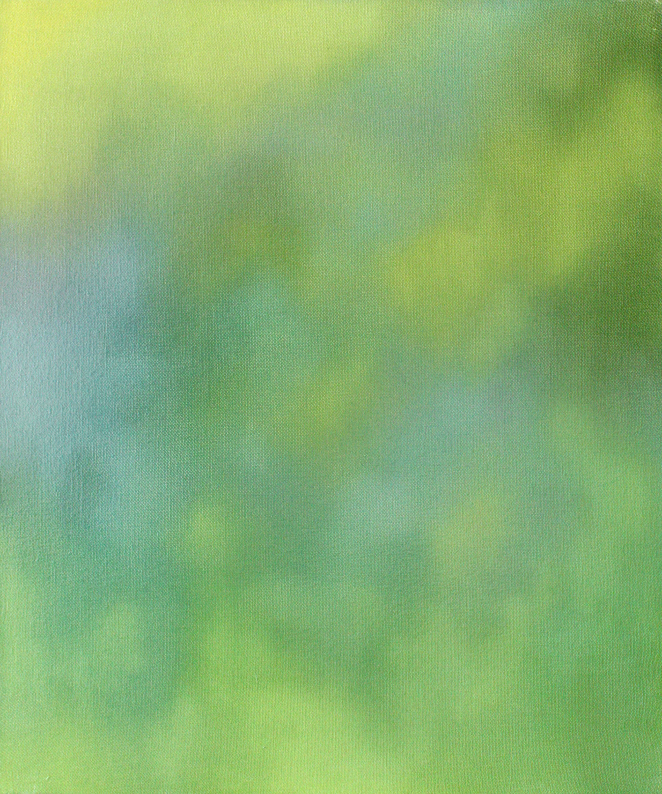
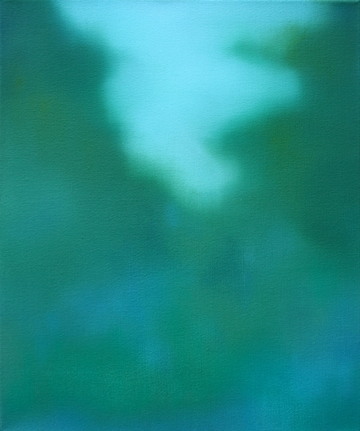
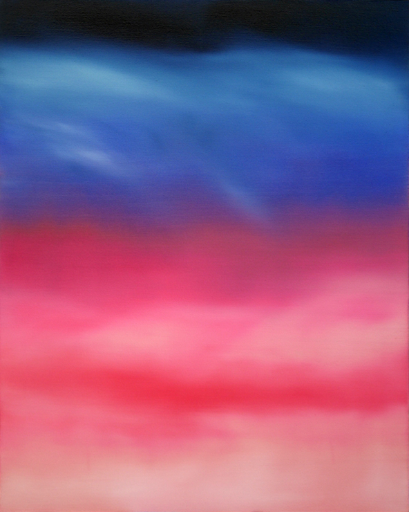
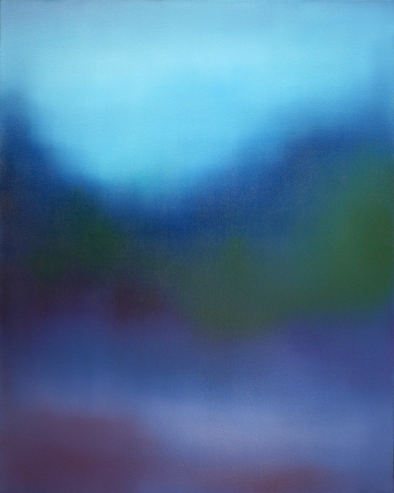

| *1992 in Berlin. Lives and works in Paris. |
| 2020 - 2021 Sorbonne Université | MA Art History | |
| 2019 - 2020 Sorbonne Université | MA Curatorial Studies | |
| 2015 - 2018 Ecole nationale supérieure des Beaux-Arts de Paris | MFA Multimedia | Jean-Marc Bustamante | |
| 2017 - 2018 Kunstakademie Düsseldorf | Painting | Herbert Brandl | |
| 2013 - 2015 Weissensee Kunsthochschule Berlin | Painting | Friederike Feldmann |
| 2021 René Lassere Scholarship, CIERA |
| 2020 Erasmus Scholarship |
| 2020 French-German Youth Office Scholarship |
| 2019 Diploma Award - Maurice Colin-Lefranc |
| 2018 Nominated for Prix Panthéon-Sorbonne pour l‘Art Contemporain |
| 2015 Erasmus Scholarship |
| 2015 French-German Youth Office Scholarship |
| 2021 Centre Pompidou, Art Basel | Art Mediator | 2020 - 2021 KW Institute for Contemporary Art KUNST-WERKE Berlin | Internship Curatorial Assistant |
| 2020 Centre Pompidou | Internship Curatorial Assistant | Michel Gauthier |


- 
- 


- 
- 
- 
- 
- 


- 
- 